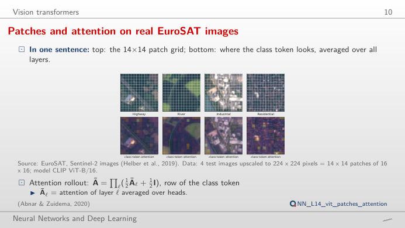
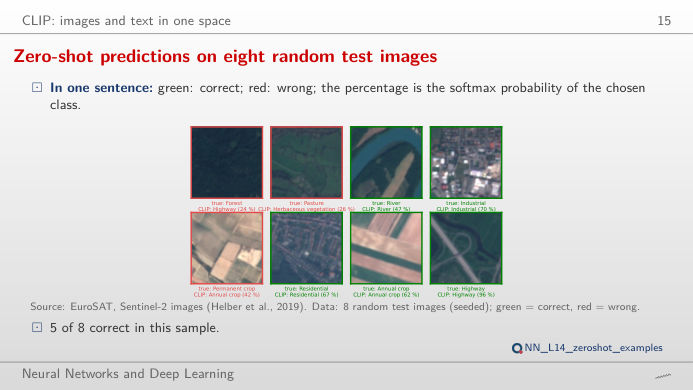
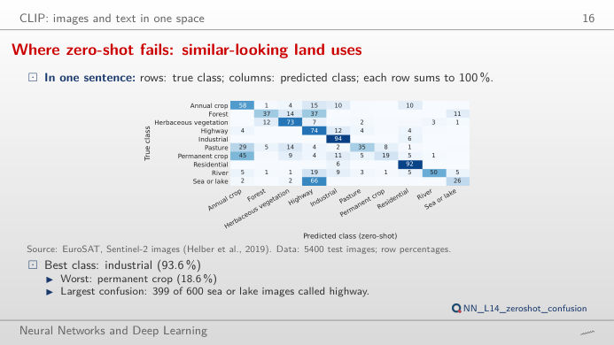
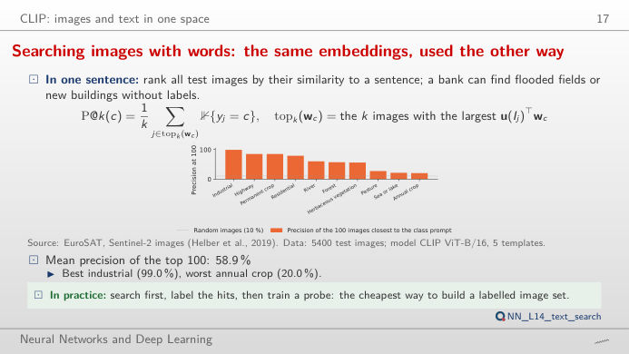
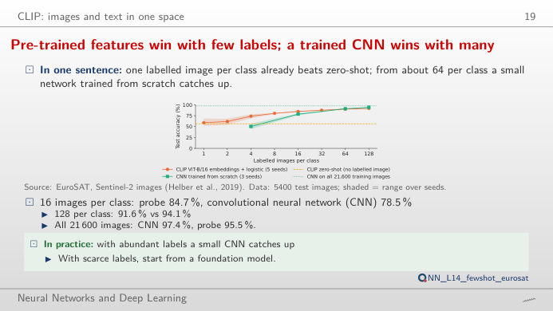
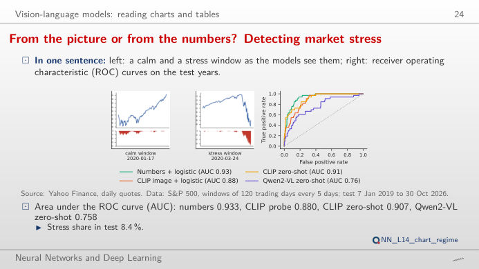

The slide of the lecture is on the left, the same figure on the right, recomputed in your browser from the results of the lecture when you move a control. Under each figure: a readout, a question for the room and the Quantlet with the code of the chart. Models: CLIP (contrastive language–image pre-training) ViT-B/32 and ViT-B/16, where ViT is a vision transformer; Qwen2-VL-2B, a vision-language model (VLM); a convolutional neural network (CNN) trained from scratch.
Vision transformers · CLIP: images and text in one space · Vision-language models: reading charts
Vision transformers
Patches and attention on real EuroSAT images

Answer
14 × 14 = 196 patch tokens plus one class token, 197 in all (lecture numbers: 12 layers, 12 heads, width 768). With 8 × 8 patches the grid is 28 × 28 = 784 tokens, four times more, and self-attention compares every token with every other one, so its cost grows about 16 times. Switch to "mean colour of each patch": with large patches a road or a river disappears inside one token, which is why small details need small patches. The attention map shows where the class token looks after all 12 layers (attention rollout).
CLIP: images and text in one space
Zero-shot predictions on eight random test images

Answer
Each class becomes a sentence ("a centered satellite photo of forest."); the image is assigned to the class whose sentence embedding has the largest cosine similarity with the image embedding. The cosines are close to each other (between about 0.2 and 0.3), so the softmax multiplies them by a scale, 100 in CLIP. The scale does not change the predicted class, only how confident the probabilities look: at scale 1 every class gets about 10%, at 200 the top class takes almost everything. On all 5,400 test images the best set-up, ViT-B/16 with 5 templates, is right 56.4% of the time; 5 of the 8 images on the slide are correct.
Where zero-shot fails: similar-looking land uses

Answer
With ViT-B/16 and 5 templates, 399 of the 600 sea or lake images are called highway, and permanent crops are recognised in only 18.6% of cases, while industrial areas (93.6%) and residential areas (92.3%) are almost always right. The prompt matters a lot: the bare folder name gives 34.1% (ViT-B/32) and 42.4% (ViT-B/16), the average of 5 satellite templates 49.1% and 56.4%. Words that describe the image as a satellite photo move the text embedding closer to this kind of picture.
Searching images with words: the same embeddings, used the other way

Answer
No. Among the 100 images most similar to the prompt, 99% are industrial for the industrial query, but only 20% are annual crops for the annual crop query, and 21% for sea or lake; the mean over the 10 queries is 58.9%. Move k: precision usually falls as more images are returned, and it cannot stay at 100% once k exceeds the number of test images of the class (400 to 600, given in the readout). A search engine on a bank's satellite archive would need checking class by class.
Pre-trained features win with few labels; a trained CNN wins with many

Answer
With few labels the pre-trained features win: one image per class gives 59.0% with the CLIP probe, already above zero-shot (56.4%); with 4 per class the probe reaches 73.8% and the CNN 50.3%, with 16 per class 84.7% against 78.5%. At 64 per class the CNN catches up (90.9% against 90.1%) and at 128 it is ahead (94.1% against 91.6%); on all 21,600 training images the CNN reaches 97.4%, the probe 95.5%. Labels are expensive: pre-trained embeddings are the cheap start, a dedicated model pays off once the labels exist.
Vision-language models: reading charts
From the picture or from the numbers? Detecting market stress

Answer
The numbers: area under the ROC (receiver operating characteristic) curve (AUC) 0.933 for the logistic regression on the numbers, 0.907 for CLIP zero-shot, 0.880 for the CLIP image probe and 0.758 for Qwen2-VL zero-shot, on 394 test windows of which 8.4% are stress. Move the share of windows flagged: with 10% of the windows flagged (39 alarms), the numbers catch 21 of the 33 stress windows, CLIP zero-shot 20, the CLIP probe 14 and Qwen2-VL 11; to catch 25 of them the numbers need 59 alarms, Qwen2-VL 191. When the numbers behind a chart exist, give the model the numbers; the image route is for documents where only the picture exists.
Images: EuroSAT, Sentinel-2 RGB images of land use in Europe, 64 × 64 pixels, 10 classes (Helber et al., 2019); 21,600 training and 5,400 test images, split fixed in advance. Market charts: S&P 500 daily closes (Yahoo Finance), windows of 120 trading days every 5 days, test windows from 2019 to October 2026. Open models from Hugging Face; all scores were computed in the lecture (lectures/L14/analysis_L14.py), except the CLIP text embeddings of the 30 example images and the attention rollout of the 10 images of the first block, recomputed with the same models for this page.